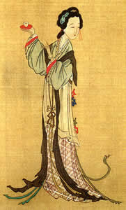

今天无意间看到一帖子，大致是说现在中国电影青楼化了，所以就堕落了。但青楼怎么了，中华文化的精华都出自青楼，青楼是中华文化之源！现在中国的垃圾电影怎么配得上青楼？不要以为中国最伟大的小说和红楼有关就小看青楼，写红楼的人一定和青楼相关，没有青楼，一定没有红楼。
且不说柳如是怎么使得明末清初两大文学盟主俯首称臣，几百年后，还让一个上世纪中国最顶尖的学者来为这青楼来的写别传；也不说唐宋有多少名篇巨著是在青楼里写就，中国的古典音乐、绘画有多少是青楼里的出品；更不说有多少中国家喻户晓的缠绵情事千百年在青楼里被不断制造；就说现在性也文化了、茶也文化了、酒也文化了，此文化彼化文的，这青楼就不能文化一场？
青楼里涵盖了几乎所有中国引以为豪的文化，性文化、茶文化、酒文化等，哪一个不是在青楼里发扬光大？诗词曲赋、经济文章，哪一个不经历青楼而能发扬光大？看看“欲穷千里目”那位，与另两位大名人更上一层青楼时，因为青楼里的没唱他的东西急得满脸通红的样子，就知道青楼确实是文化的源泉，更是灵感的源泉。
青楼的消失伴随着整个文明的堕落，只有最猥琐的人才把青楼和性交易无耻地绝对相关。真正的青楼，更多的不是性，就像好酒需要好的窖，青楼就是那个窖，里面酿造的是茅台、五粮液。有了青楼这被污蔑为窑子的窖子，中华文化才能战胜时间，醇香无比。
现在，老东西一个个恢复了，为什么这青楼就不能恢复？除了所谓道德等方面的可笑理由，最关键的却是，如今人的素质根本配不上青楼。请问，现在有李白、杜甫、苏轼那样配得上青楼的人吗？现在有“十年一觉扬州梦”这样配得上青楼的诗句吗？
青楼，中华文化之源，中华文化的历史之梦！
男女平等，色情合法化的唯一前提！